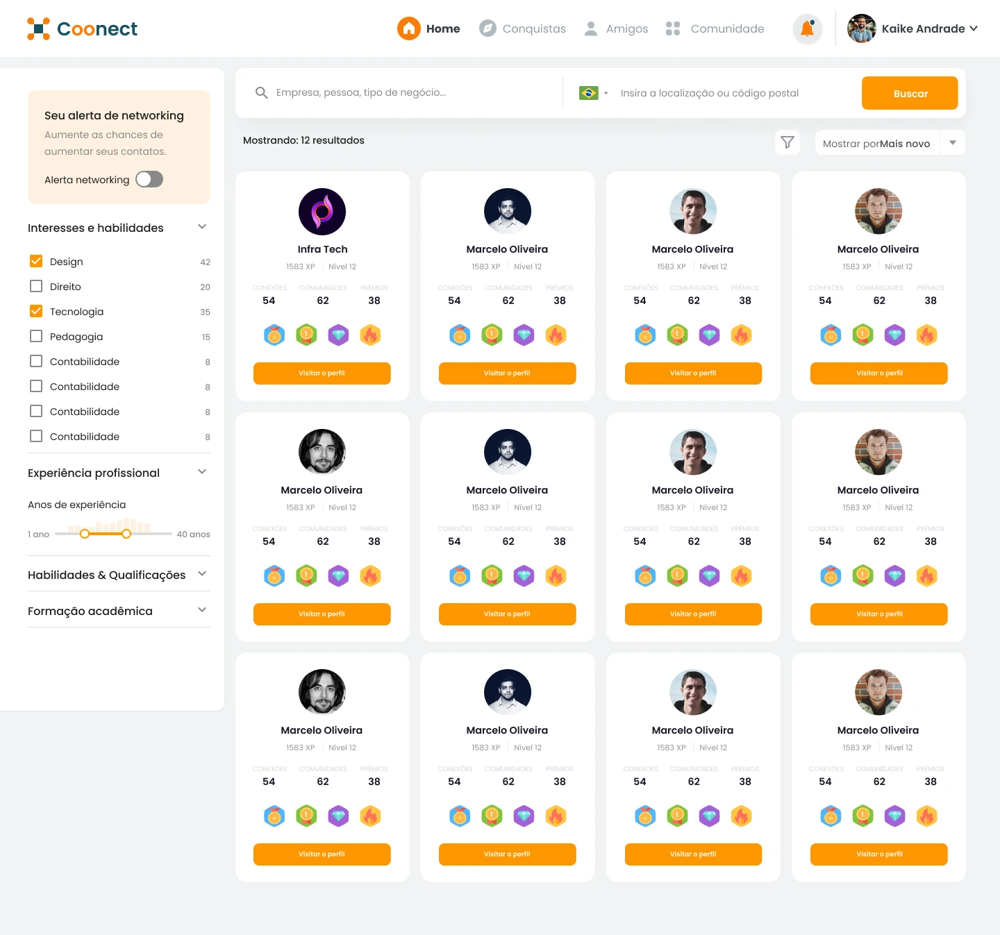
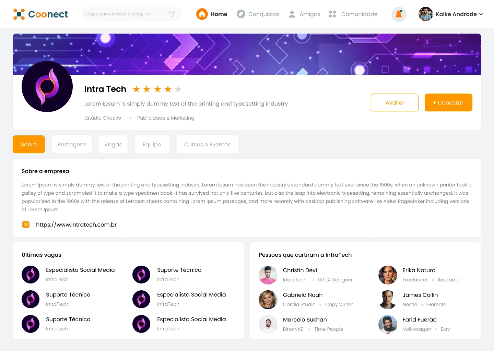
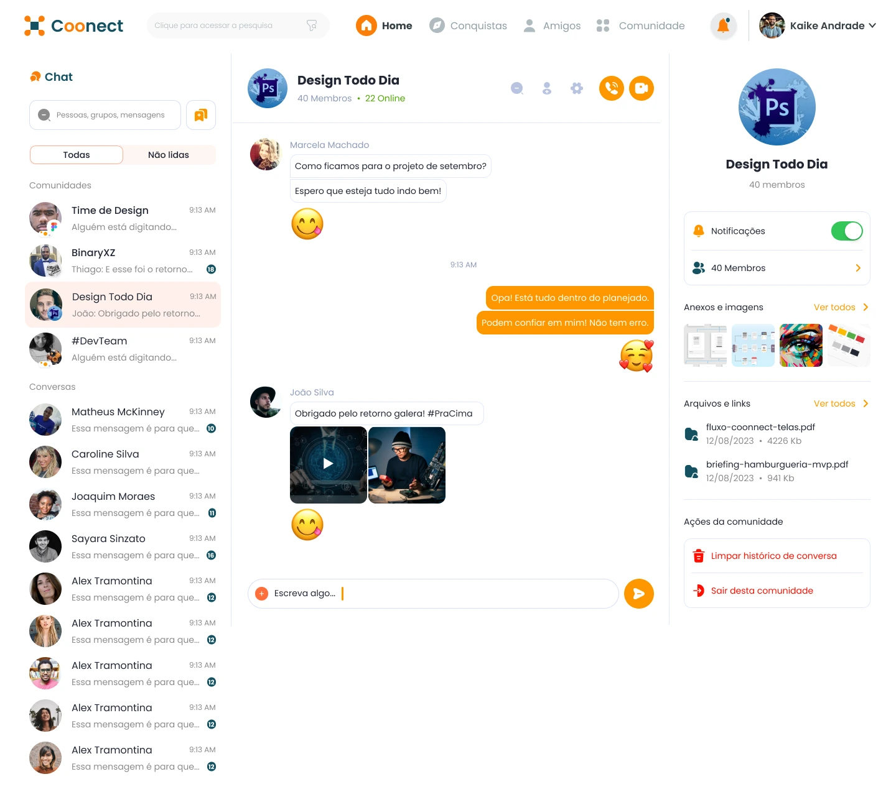

Descoberta com critérios
A busca organiza interesses, experiência e qualificações junto dos resultados. Perfis ajudam a avaliar uma conexão antes de iniciá-la.
Coonect
Uma rede profissional que reúne descoberta de pessoas, comunidades, conteúdo e reconhecimento da participação.
Explore o projeto
EscopoPesquisa, fluxos, wireframes, UI e prototipação.
CriaçãoSolucci
ApresentaçãoDesign de produto e experiência. Interfaces originais do projeto.
Uma rede profissional precisa ajudar as pessoas a encontrar afinidade. Feed, busca, perfis e conversas têm papéis diferentes nesse caminho e precisam funcionar como partes do mesmo produto.
A Coonect organiza esses encontros em torno de interesses, comunidades e atividade. A linguagem visual mantém a navegação estável enquanto o conteúdo muda de descoberta para conversa e acompanhamento.
Percorra o feed, as buscas, os perfis e as comunidades. Telas longas podem ser roladas dentro da janela.
A busca dá contexto às conexões. Comunidades e conquistas prolongam a participação para além da primeira visita.
Telas originais do projeto. Perfis, publicações e indicadores são conteúdo ilustrativo da interface.
01 / 05Feed e descoberta
Não foi possível carregar a navegação. As telas estão disponíveis abaixo.



A busca organiza interesses, experiência e qualificações junto dos resultados. Perfis ajudam a avaliar uma conexão antes de iniciá-la.
Comunidades e contatos compartilham o ambiente de mensagens. A identidade do grupo e os recursos da conversa continuam visíveis.
Atividade, conquistas, cursos e missões tornam a participação perceptível. O desenho distingue conteúdo social de acompanhamento individual.
Ver tela completaLeitura das etapas e dos caminhos representados nas interfaces.
Explorar publicações e interesses.
Refinar a busca por pessoas e empresas.
Conhecer o perfil antes de aproximar.
Conversar nas comunidades e acompanhar a atividade.
A pesquisa e o desenho dos fluxos se desdobraram em wireframes, interfaces e protótipos. O trabalho conecta as áreas da rede por uma navegação consistente e por decisões visuais que diferenciam descoberta, conversa e progresso.
Projeto apresentado pelo trabalho de design e prototipação.